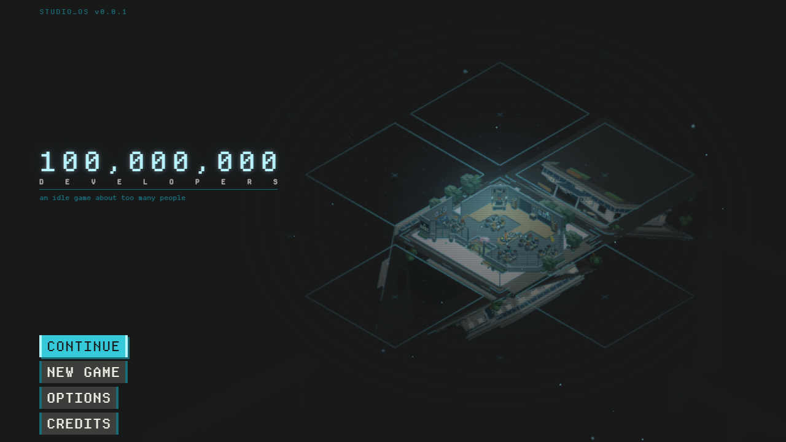

OFFICE UNFOLD: PROGRESS
2026-11-01. The ask: infinite expansion where every new office unfolds from the last, instead of one house dropping after another. Where it stands, in the demo and in the game.
THE IDEA
A new floor is hinged on the edge it shares with its oldest neighbour. It starts folded under that neighbour, swings up, slams flat, then fills with desks and people. Nothing falls, so there is no boundary to count; the company stays one continuous floor, and the pace can go from a slow reveal to a stampede without changing the verb.
THE DEMO
Standalone, loopback only, no game file touched: docs/demos/office-unfold-2026-10-30/index.html under npm run dev. The real HQ is plate 0, built by the game's own builder and left untouched.


Keys: Space expand, B burst, A auto, M sound, 1-4 or the wheel climb floor, campus, city, planet, J flies the whole ladder. The sound was redesigned (airy swing, wooden slam, a marimba note per floor climbing a pentatonic scale) after the first siren-like sweep was rejected.
IN THE GAME
Houses now unfold instead of falling, on every side of the HQ. The garage is block zero and addresses sort outward from it, so the first four houses open north, west, east and south at once.


| PIECE | WHAT CHANGED |
|---|---|
cityGrid.ts | cityHinge picks the oldest standing neighbour; houseUnfold is the swing (1.6 s, 0.9 s settle). houseLanding is gone. |
cityHouses.ts | Each house hangs from a hinge group; its paving swings with it, then is handed back to the city. |
garageEnvironment.ts | The city's ground plane sits 40 m down so a house can swing up from under its block. |
GDD.html | §7.7.2 amended with the user's words and the argument; §7.8.1c points to it. The old "Houses fall" bullet is marked superseded. |
Unchanged: the garage's twenty, hires into a standing house, the addresses, and the thruster lift-off when a layoff or the first death empties a house (§15.1a).
VERIFIED
Passed: npm run check (lint, tsc, 2,263 tests, art check, the 121-screen frame gate). The swing itself was looked at in headless Chrome stills with 450 developers hired live, not played by hand.
NOT DONE
| ITEM | NOTE |
|---|---|
| Layoff or liquidation mid-swing | Handled in code (the house is flattened first), not driven in a browser. |
| First house sits behind the HQ's back wall | The address sort puts it north. Changing that changes saved addresses. |
| Demo's office furniture in the game | Not ported; the game's houses already have furnished cutaway interiors. |
| City and planet rungs in the game | Demo only: the cube-sphere claim order for the other five faces, the monitor/phosphor handoff, the colony map, and a GDD pass on §7.4a. |
| Browser extension check | The extension could not reach the demo's ports, so the demo was verified headless. |